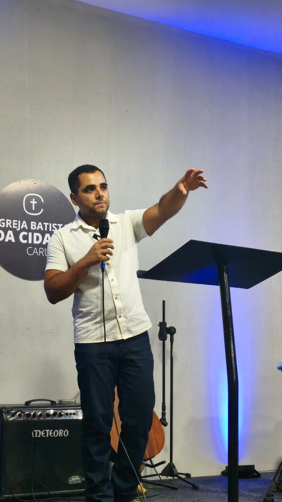
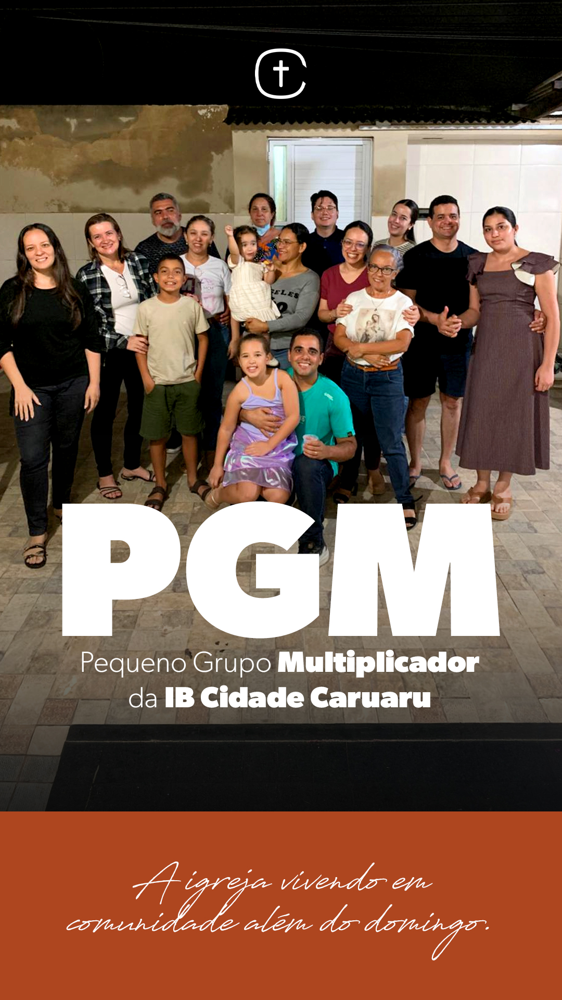
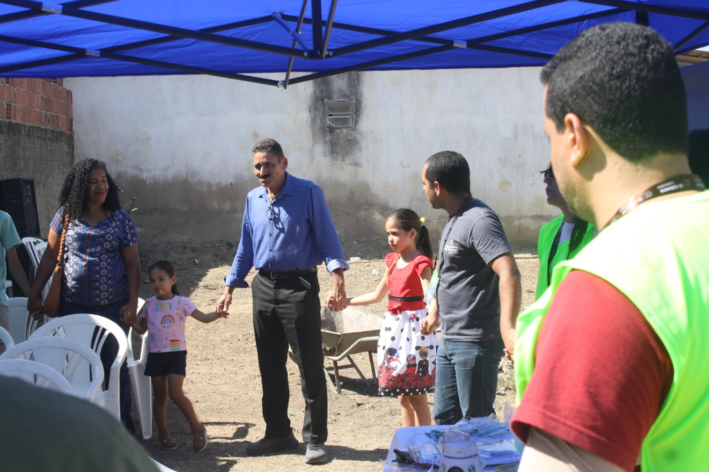
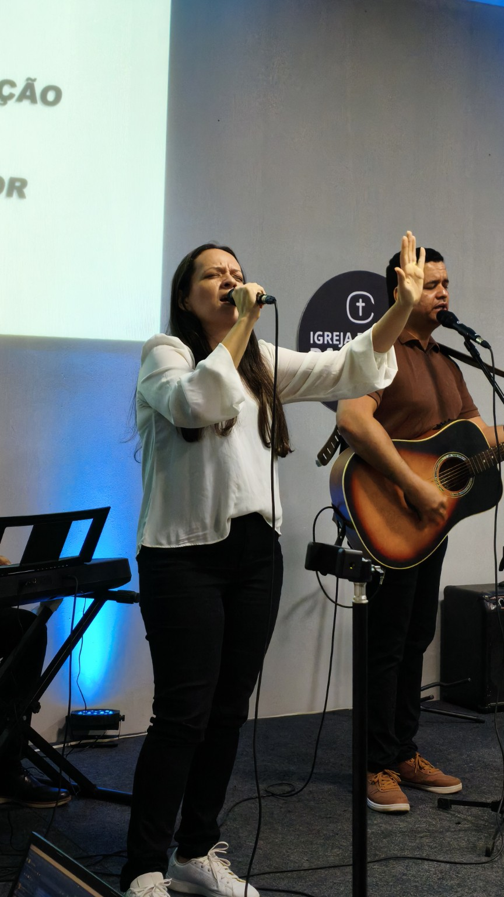
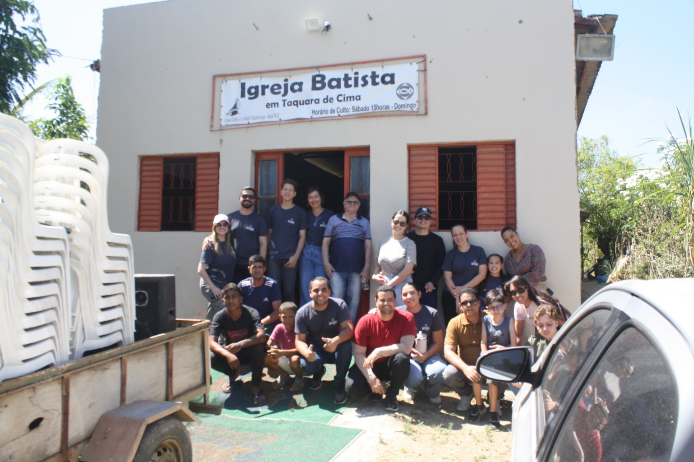
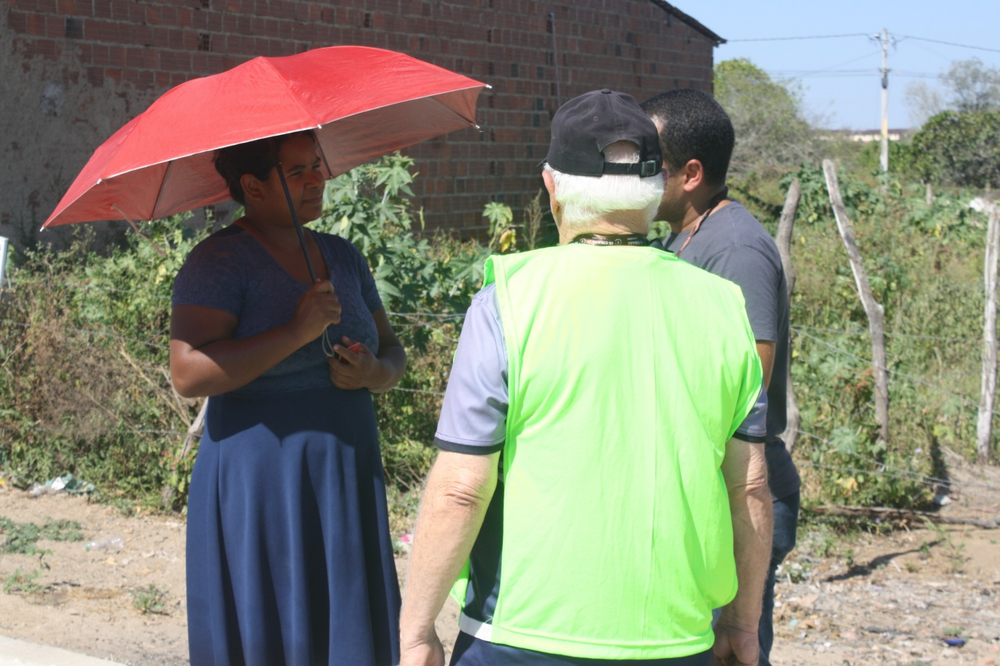
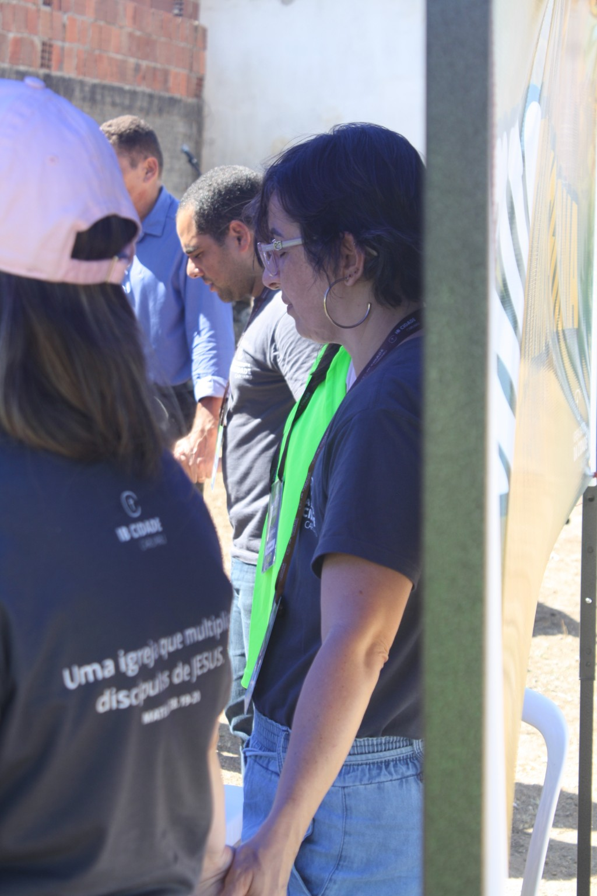

CRISTO
Jesus Cristo é a pessoa central e mais importante da IB Cidade.
Jesus Cristo no centro. Uma comunidade que cresce na Palavra, na comunhão e no discipulado.
Conheça nossa igrejaA Igreja Batista da Cidade em Caruaru tem como visão ser uma igreja que multiplica discípulos de Jesus Cristo. Cremos que a missão é de Deus e que a igreja existe para participar daquilo que Ele já está fazendo no mundo.
“Ser uma igreja que multiplica discípulos de Jesus Cristo.”

Valores apresentados no Café Conexão.
Jesus Cristo é a pessoa central e mais importante da IB Cidade.
A Bíblia é nossa única regra de fé e prática.
Reconhecemos nossa total dependência de Deus.
Fazer discípulos de Jesus que fazem outros discípulos.
Relacionamentos essenciais para o crescimento e amadurecimento cristão.
Somos guiados pelo sonho de ganhar Caruaru para Cristo.
Conheça os caminhos de comunhão, serviço e formação apresentados pela IB Cidade.

Pequeno Grupo Multiplicador: um ambiente cercado de amor para crescer no conhecimento e no relacionamento com Deus.

Uma iniciativa da IB Cidade apresentada em seus materiais de discipulado e vida em comunidade.

Um espaço de acolhimento para conhecer a visão, os valores e os caminhos de participação na igreja.
Registros reais de momentos de comunhão, visitas e serviço à comunidade.



O IBC Kids é parte da vida da igreja. Enquanto caminhamos juntos como igreja, queremos que as crianças também vivam a comunhão, aprendam a Palavra e descubram a alegria de fazer parte da família de Deus.
Conheça a IB CidadeConheça nossa comunidade, participe do Café Conexão e descubra os caminhos de comunhão e discipulado.
Acompanhe no Instagram